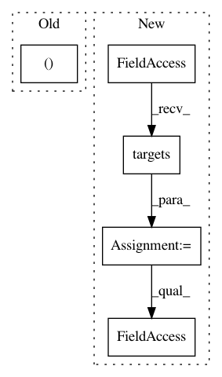

7699c5dcdb3cfbb8050581aed2f2eb7a5cc99579,src/python/pants/backend/codegen/tasks/protobuf_gen.py,ProtobufGen,_calculate_sources,#ProtobufGen#Any#,167
Before Change
for target in targets:
target.walk(collect_sources)
return bases, sources
def createtarget(self, lang, gentarget, dependees):
if lang == "java":
After Change
walked_targets.update(t for t in target.closure() if self.is_gentarget(t))
sources_by_base = OrderedDict()
for target in self.context.build_graph.targets():
if target in walked_targets:
base, sources = target.target_base, target.sources_relative_to_buildroot()
if base not in sources_by_base:
sources_by_base[base] = OrderedSet()
sources_by_base[base].update(sources)
return sources_by_base
def createtarget(self, lang, gentarget, dependees):
if lang == "java":
In pattern: SUPERPATTERN
Frequency: 3
Non-data size: 5
Instances
Project Name: pantsbuild/pants
Commit Name: 7699c5dcdb3cfbb8050581aed2f2eb7a5cc99579
Time: 2014-08-08
Author: garrett.malmquist@gmail.com
File Name: src/python/pants/backend/codegen/tasks/protobuf_gen.py
Class Name: ProtobufGen
Method Name: _calculate_sources
Project Name: pantsbuild/pants
Commit Name: b7aceaac883711484cc3fe88b91e04ca81537f03
Time: 2015-06-01
Author: mjennings@foursquare.com
File Name: contrib/spindle/src/python/pants/contrib/spindle/tasks/spindle_gen.py
Class Name: SpindleGen
Method Name: execute_codegen
Project Name: pantsbuild/pants
Commit Name: bfb1453dd22fd12c69e314e0995499e3f4835614
Time: 2012-10-31
Author: jsirois@twitter.com
File Name: src/python/twitter/pants/tasks/jvm_task.py
Class Name: JvmTask
Method Name: classpath